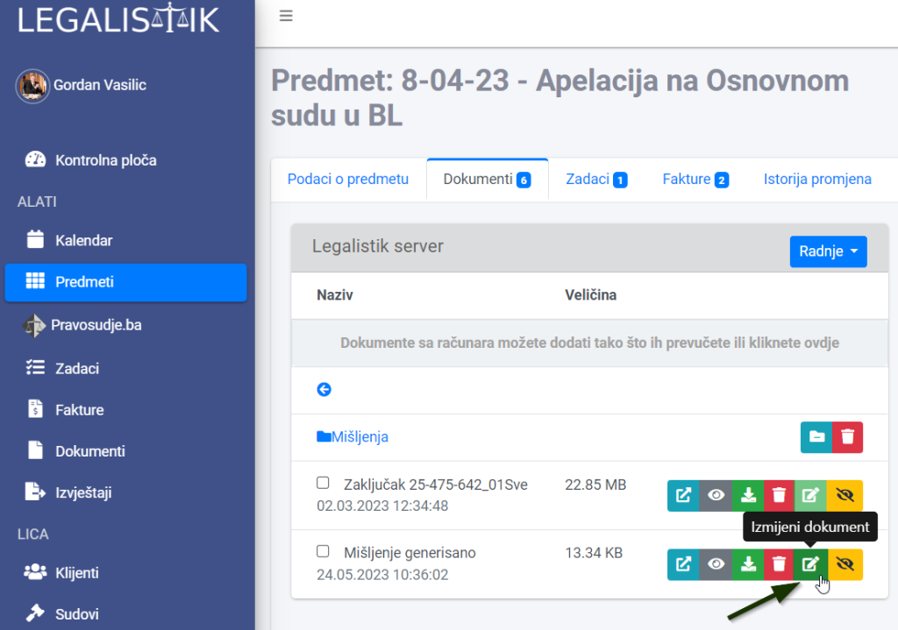
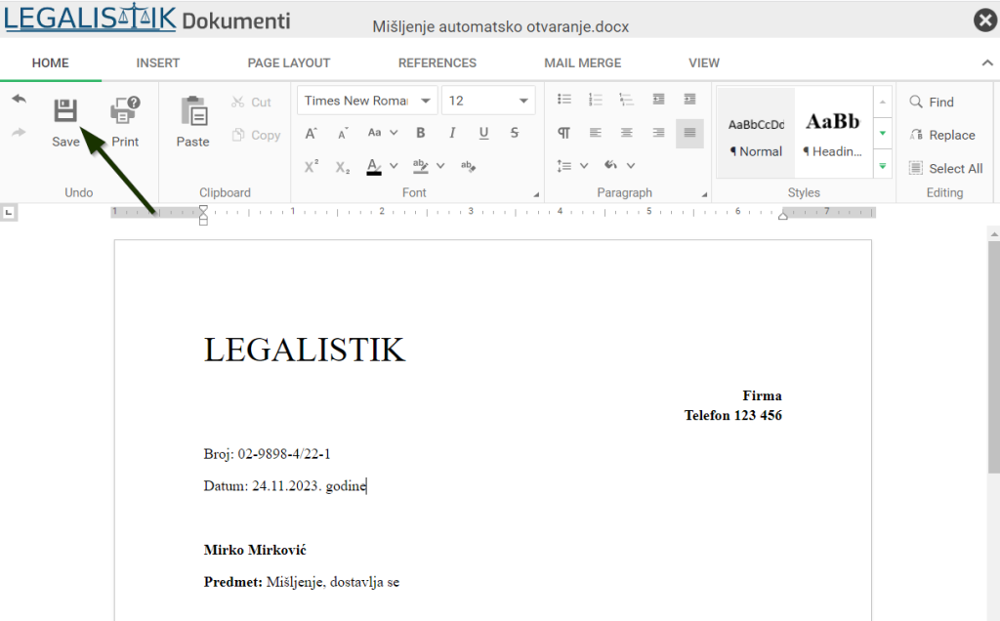
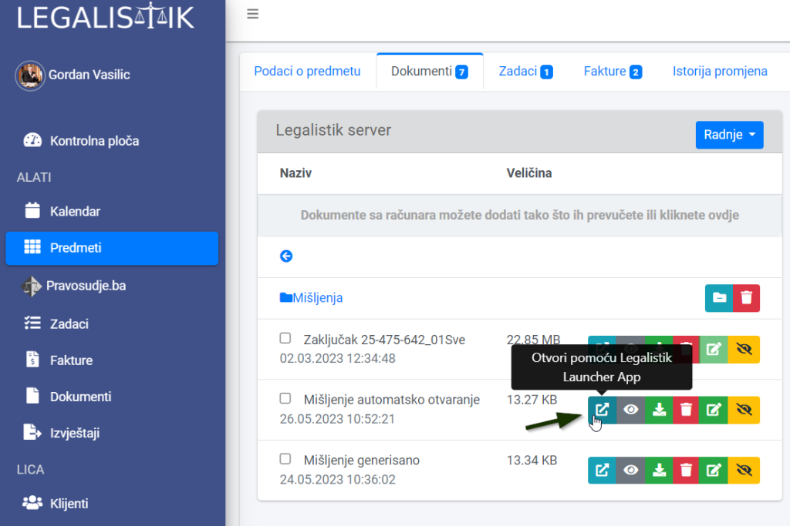

Dokumente u Excel ili Word formatu, koje ste dodali unutar Predmeta ili Dokumenata, možete mijenjati na 2 načina:
Izmjena dokumenata online (unutar Legalistik Dokumenti) #
Klikom na ikonicu Izmjeni dokument otvara se Legalistik Word ili Excel editor (u zavisnosti od formata dokumenta koji se mijenja) u novom prozoru web pretraživača.

Aplikacije za uređivanje dokumenata izgledaju vrlo slično kao Word i Excel instalirani na računaru. Nakon završenih izmjena, potrebno je kliknuti na ikonu Save, da bi sačuvali promjene. Nakon toga možete zatvoriti prozor LegalistikDokumenti:

Izmjena dokumenata na lokalnom računaru #
Ako dokument koji je u Legalistik aplikaciji želite da izmjenite na svom računaru, u Word ili Excel aplikaciji koju imate instaliranu na računaru, kliknite na ikonu “Otvori pomoću Legalistik Launcher App” pored dokumenta:

Ako vam Legalistik Launcher App nije instaliran na računaru, nakon klika će vas pitati da se instalira (samo jednom se vrši instalacija). Ulogujte se u aplikaciju sa istim korisničkim imenom i lozinkom kao na Legalistik aplikaciji.
Dokument bi se trebao otvoriti unutar Word ili Excel programa koji su instalirani na vašem računaru. Nakon što završite izmjene, samo snimite dokument i on će se automatski ažurirati na Legalistik server.